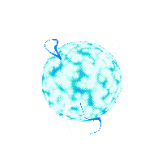

Jest to otwarty projekt literacki, z którego każdy może czerpać inspirację do swoich dzieł, i w którym każdy może tworzyć własne historyjki.
To uniwersum pełne planet, cywilizacji i konfliktów, gotowych do odkrycia i rozwinięcia.
Zostało stworzone z myślą o swobodzie twórczej, ale przy zachowaniu spójności i logiki świata przedstawionego.
Nie musisz znać całego lore, by napisać coś własnego — wystarczy jeden system, jedno wydarzenie, jeden pomysł.
Możesz osadzić akcję na terraformowanej Wenus, w bazie górniczej na Trytonie albo w mrocznych podwodnych miastach Enceladusa.
Każda historia, nawet ta najmniejsza, rozwija świat i zostaje jego częścią.
Nie liczy się styl, długość czy gatunek — science fiction, dramat polityczny, horror lub romans — wszystko tu ma miejsce, ale pamiętaj - wszystko musi być realistyczne.
Ten świat powstaje wspólnie, z pomocą czytelników, marzycieli i twórców z wyobraźnią.
Dołącz do projektu, opowiedz własną historię i stań się częścią galaktycznej mozaiki.

Ziemia po upadku ludzkości
Po III wojnie światowej ludzkość nie upadła.
Zamiast zniknąć w popiołach, wznieśliśmy się ku gwiazdom, silniejsi niż kiedykolwiek.
Zbudowaliśmy statki, kolonie i nowe światy, terraformując planety, które wcześniej były nieprzyjazne życiu.
W trakcie ekspansji natknęliśmy się na inne formy inteligentnego istnienia — jedne okazały się przyjazne, inne śmiertelnie wrogie.
Narodziły się nowe frakcje: republiki, reżimy, konfederacje i koalicje, z własnymi ideologiami i ambicjami.
Granice zostały przesunięte, ale konflikty pozostały — wojny nie ustały, tylko przeniosły się w kosmos.
Galaktyka to teraz mozaika politycznych intryg, walki o zasoby i rywalizacji międzygatunkowej.
Nie ma jednej dominującej siły — każdy sojusz jest tymczasowy, każda zdrada nieunikniona.
To nie jest utopia — to nowa era ludzkości, pełna nadziei, ale i zagrożeń większych niż kiedykolwiek.
Linia czasowa - definiujące momenty.
Era 0 - 3 wojna światowa - 2078
Era 1 - Projekt 2 złotej ery eksploracji - 2130
Era 2 - Rebelia planet zewnętrznych i powstanie republiki - 2207
Era 3 - Bitwa o system Jowiański i podpalenie Jowisza - 2235
Era 4 - Powstanie systemu ADAM i podzielenie społeczeństwa
Era 5 - Podbój systemu Akwilian - 2342
Era 6 - Odkrycie Tau Cetian - 2425
Era 7 - Drugi podbój systemu Alfa Centauri - 2425